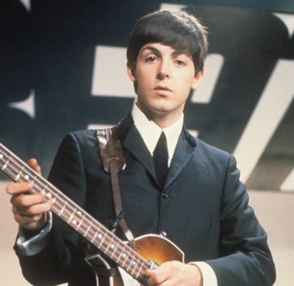
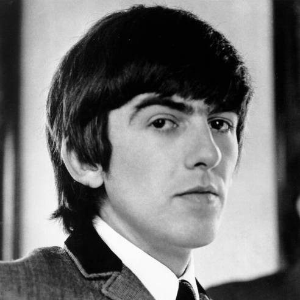
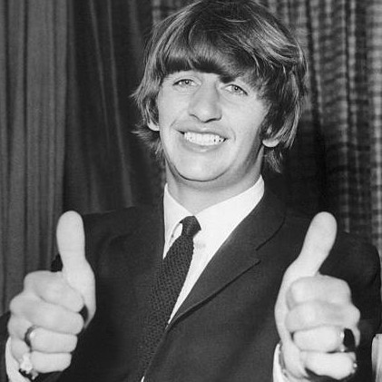
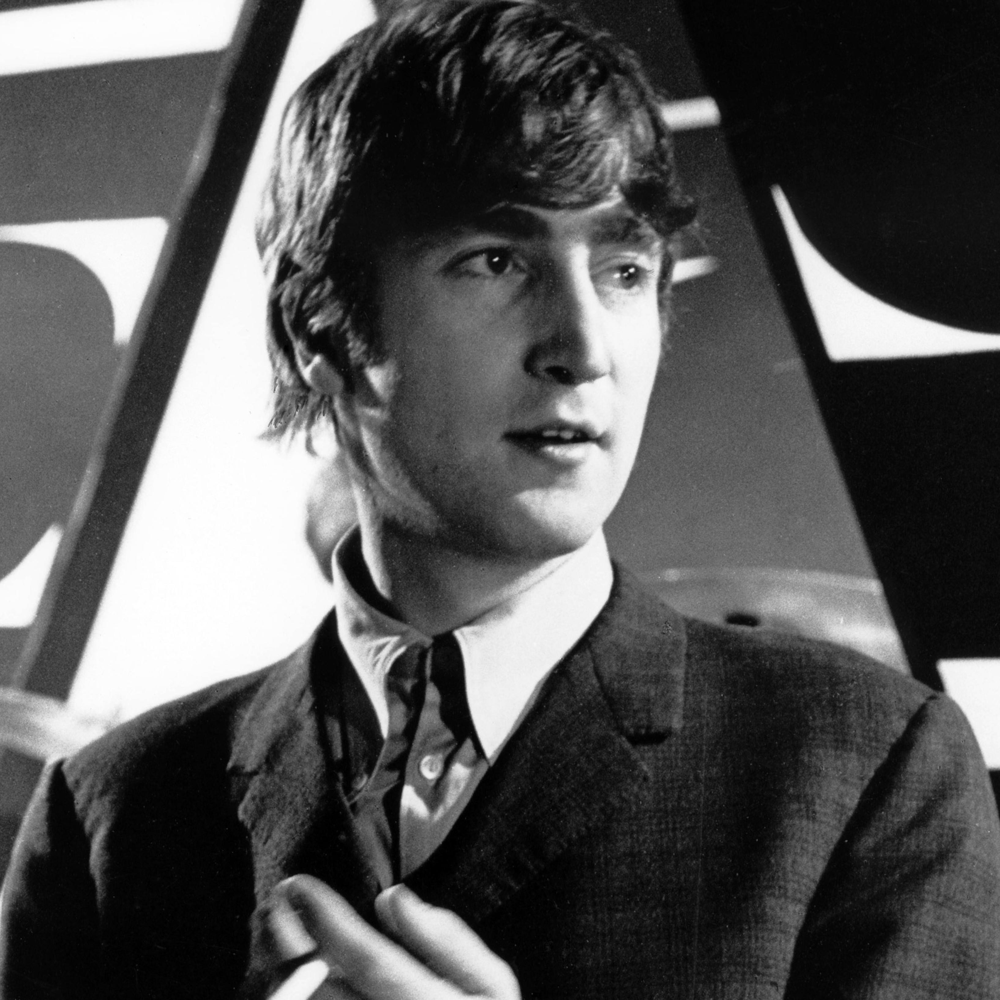

The Beatles
The Beatles foi uma banda britânica de rock formada em Liverpool, em 1960, composta por John Lennon, Paul McCartney, George Harrison e Ringo Starr. Considerada uma das bandas mais influentes da história da música, teve papel fundamental na transformação do rock e da cultura popular durante a década de 1960.
A banda começou sua trajetória tocando em clubes de Liverpool e Hamburgo, conquistando popularidade no Reino Unido com a música Love Me Do, em 1962. Com o crescimento da Beatlemania, alcançou fama internacional em 1964, liderando a chamada Invasão Britânica nos Estados Unidos. Ao longo da carreira, explorou diversos estilos musicais e lançou álbuns marcantes, como Rubber Soul, Revolver, Sgt. Pepper's Lonely Hearts Club Band e Abbey Road
O grupo encerrou suas atividades em 1970, e seus integrantes seguiram carreiras individuais. Apesar da separação, seu legado permaneceu, com mais de 600 milhões de cópias vendidas mundialmente, diversos prêmios e sua inclusão no Rock and Roll Hall of Fame em 1988.


Paul McCartney
James Paul McCartney nasceu em 18 de junho de 1942, em Liverpool, Inglaterra. Foi cantor, compositor e baixista dos Beatles, sendo um dos principais responsáveis pelo desenvolvimento musical da banda. Ao lado de John Lennon, formou uma parceria que produziu algumas das músicas mais conhecidas do grupo. Entre suas contribuições estão canções como Hey Jude e Let It Be. Depois da separação dos Beatles, continuou sua carreira musical, fundou a banda Wings e lançou diversos trabalhos solo. Ao longo das décadas, tornou-se um dos músicos mais influentes e reconhecidos da música mundial.


George Harrison
George Harrison nasceu em 25 de fevereiro de 1943, em Liverpool, Inglaterra. Foi o guitarrista principal dos Beatles e o integrante mais jovem da formação mais conhecida do grupo. Embora inicialmente tivesse menos espaço para composições, conquistou destaque com músicas como Something e Here Comes the Sun. Durante sua trajetória na banda, desenvolveu grande interesse pela música e cultura indianas, incorporando novos instrumentos e influências às composições dos Beatles. Após o fim do grupo, construiu uma carreira solo de sucesso, com destaque para o álbum All Things Must Pass. Faleceu em 29 de novembro de 2001, vítima de câncer.


Ringo Starr
Richard Starkey, conhecido mundialmente como Ringo Starr, nasceu em 7 de julho de 1940, em Liverpool, Inglaterra. Antes de entrar nos Beatles, já trabalhava como baterista em outras bandas, desenvolvendo experiência musical. Em 1962, substituiu Pete Best e tornou-se o baterista definitivo do grupo. Além de tocar bateria, também participou dos vocais de algumas músicas, como Yellow Submarine e With a Little Help from My Friends. Após a separação dos Beatles, iniciou uma carreira solo, lançou diversos álbuns e colaborou com outros artistas. Continua sendo reconhecido como um dos bateristas mais importantes da história do rock.


John Lennon
John Winston Lennon nasceu em 9 de outubro de 1940, na cidade de Liverpool, Inglaterra. Foi cantor, compositor e um dos fundadores dos Beatles. Desde jovem demonstrava interesse pela música e, em 1957, conheceu Paul McCartney, com quem desenvolveu uma das parcerias musicais mais importantes da história. Na banda, atuava como vocalista e guitarrista, além de compor diversas canções. Após o fim dos Beatles, iniciou uma carreira solo, lançando músicas de grande sucesso, como Imagine. Também ficou conhecido por seu ativismo em defesa da paz. Foi assassinado em Nova York, em 8 de dezembro de 1980.